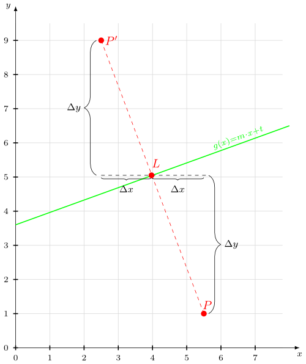

It's astonishing how difficult it is to find a good explanation how to reflect a point over a line that does not use higher math methods. So here is my explanation:
You have a point \(P = (x,y)\) and a line \(g(x) = m \cdot x + t\) and you want to get the point \(P' = (x', y')\) that got mirrored over \(g\).
{kind=link}

As you can see, you can construct this quite easily on paper:
- Construct the perpendicular through $P$ to $g$. It starts in $L$ and ends in $P$.
- Double the length of the perpendicular in the direction of $L$.
- The endpoint is $P'$.
How can you do that without drawing it?
First you have to get the perpendicular \(s(x) = m_s \cdot x + t\) (the dashed red line).
You have to know this: \(m_s = - \frac{1}{m}\) And then you know that \(P\) is on \(s\). So you simply put in the values \(x,y\) of P and solve to \(t\): \(t = y - m_s \cdot x\)
Now you have \(s\). As \(s\) and \(g\) have exactly one point in common, the following equation gives exactly one result:
\(s(x) = g(x)\)
You have to solve for \(x\). Then you only need to put \(x\) into \(s(x)\) or \(g(x)\) and you're done. You've calculated \(L = (x,y)\).
Now you know \(\Delta x = |x_L - x_P|\) and \(\Delta y = |y_L - y_P|\) and you can calculate \(P'\)